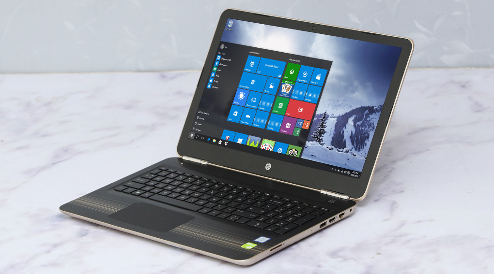

19.990.000
Thông số kỹ thuật CPU: Intel, Core i7 Skylake, 6500U, 2.50 GHz RAM: DDR4 (1 khe), 4 GB, 2133 MHz Đĩa cứng: HDD, 1 TB Màn hình rộng: 15.6 inch, HD (1366 x 768 pixels) Cảm ứng: Không Đồ họa: NVIDIA® GeForce® 940M, 4 GB Đĩa quang: DVD Super Multi Double Layer Webcam: 1 MP Chất liệu vỏ: Vỏ nhựa Cổng giao tiếp: 2 x USB 3.0, HDMI, LAN (RJ45), USB 2.0 Kết nối khác: Bluetooth v4.0 PIN/Battery: Li-Ion 2 cell Trọng lượng: (Kg) 2 kg